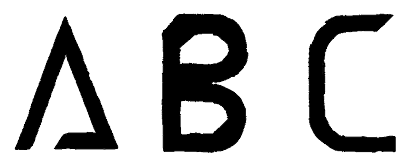
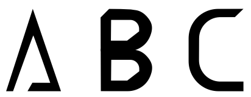

Origins
NAME TBD was created in 2018 for an independent study course in my senior year of college. Inspired by Futura and my love of clean flowing lines, NAME TBD is designed to be used as a header or when it can be displayed in a large point size.
Sketching

After some initial brainstorming of what style I wanted to aim for I began the process of sketching out each letter by hand on graph paper. The above image is one of the hand drawn final designs before I began the digitizing process.
Digitization

The above image is one of the first digital versions of the hand drawn glyphs. As you can see the edges are fuzzy and irregular.

After spending an embarrassing amount of time working through how to smooth the edges this was the result.
Next Steps
With the core glyph set drafted, my plan is to document the entire design process on this site and gradually polish each character. Once complete, NAME TBD will be released under a Creative Commons license for non-commercial use.